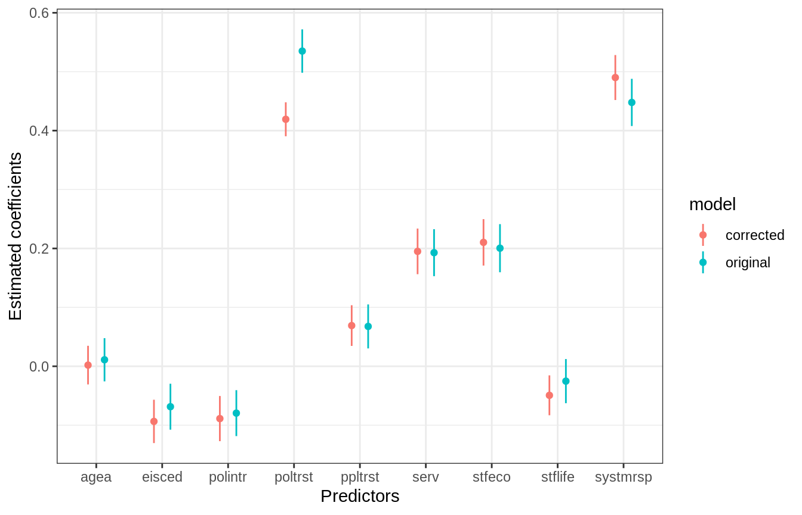

case-study-ess.RmdIn this case study we will go through an applied example of the capabilities of the sqpr package. For a detailed example on accessing the SQP API, check out the ‘Accessing the SQP API’ vignette from the sqpr package.
We’ll begin by loading the packages we’ll use and the sqpr package.
Let’s read in the data from the European Social Survey using the essurvey package and create a sum score of a number of variables. A sum score is literally the weighted \((w)\) sum of a number of variables \((y_1, y_2, ..., y_k)\) to create a composite score \((CS)\):
\[ \begin{align} Y_{cs} = \sum_{i=1}^{k}\frac{w_i}{{\delta_y}_{cs}} Y_i && \text{where $\frac{w_i}{{\delta_y}_{cs}}$ is the weight of the $i$th observed variable}\\ \end{align} \]
Remember to replace your email as a character string instead of the argument ess_email.
# Choose your selected variables
selected_vars <- c("trstprl", "trstplt", "trstprt",
"stfedu", "stfhlth", "psppsgv",
"psppipl", "ptcpplt", "ppltrst",
"polintr", "stflife", "stfeco",
"agea","eisced")
# Download the ESS data and clear missing values
ess7es <-
import_country("Spain", 7, ess_email) %>%
select(selected_vars, pspwght) %>%
filter(complete.cases(.))
# Calculate the standardized but unweighted sums cores
ess7es <-
ess7es %>%
mutate(poltrst = scale(trstprl) + scale(trstplt) + scale(trstprt),
serv = scale(stfedu) + scale(stfhlth),
systmrsp = scale(psppsgv) + scale(psppipl) + scale(ptcpplt))
# Calculate the standard deviation of each sum score
w_pol <- 1 / sd(ess7es$poltrst)
w_serv <- 1 / sd(ess7es$serv)
w_systmrsp <- 1 / sd(ess7es$systmrsp)
# Create the weighted and standardized composite score
ess7es <-
ess7es %>%
mutate(poltrst = w_pol*scale(trstprl) + w_pol*scale(trstplt) + w_pol*scale(trstprt),
serv = w_serv*scale(stfedu) + w_serv*scale(stfhlth),
systmrsp = w_systmrsp*scale(psppsgv) + w_systmrsp*scale(psppipl) + w_systmrsp*scale(ptcpplt))
composite_scores <- c("poltrst", "serv", "systmrsp")
all_vars <- c(composite_scores, selected_vars) # for later useSo far we have the original tibble with a few extra columns containing the composite sum scores:
ess7es
#> # A tibble: 1,624 x 18
#> trstprl trstplt trstprt stfedu stfhlth psppsgv psppipl ptcpplt ppltrst
#> <dbl+l> <dbl+l> <dbl+l> <dbl+l> <dbl+l> <dbl+l> <dbl+l> <dbl+l> <dbl+lb>
#> 1 0 [No … 0 [No … 1 [1] 3 [3] 1 [1] 3 [3] 0 [Not… 0 [Not… 6 [6]
#> 2 5 [5] 4 [4] 4 [4] 3 [3] 5 [5] 5 [5] 6 [6] 3 [3] 6 [6]
#> 3 4 [4] 3 [3] 3 [3] 3 [3] 8 [8] 6 [6] 2 [2] 4 [4] 7 [7]
#> 4 3 [3] 0 [No … 3 [3] 2 [2] 2 [2] 0 [Not… 0 [Not… 0 [Not… 10 [Mos…
#> 5 0 [No … 0 [No … 0 [No … 0 [Ext… 2 [2] 0 [Not… 1 [1] 5 [5] 7 [7]
#> 6 0 [No … 0 [No … 0 [No … 0 [Ext… 0 [Ext… 0 [Not… 0 [Not… 0 [Not… 2 [2]
#> 7 5 [5] 0 [No … 0 [No … 5 [5] 3 [3] 0 [Not… 2 [2] 0 [Not… 5 [5]
#> 8 4 [4] 0 [No … 0 [No … 5 [5] 4 [4] 0 [Not… 0 [Not… 0 [Not… 3 [3]
#> 9 5 [5] 0 [No … 0 [No … 8 [8] 5 [5] 0 [Not… 0 [Not… 0 [Not… 0 [You…
#> 10 0 [No … 0 [No … 0 [No … 0 [Ext… 0 [Ext… 0 [Not… 0 [Not… 1 [1] 1 [1]
#> # … with 1,614 more rows, and 9 more variables: polintr <dbl+lbl>,
#> # stflife <dbl+lbl>, stfeco <dbl+lbl>, agea <dbl+lbl>, eisced <dbl+lbl>,
#> # pspwght <dbl>, poltrst[,1] <dbl>, serv[,1] <dbl>, systmrsp[,1] <dbl>Let’s read in the SQP data. You have therefore to register with SQP (sqp.upf.edu) and can then login with sqp_login() using your valid SQP credentials:
sqp_login("your user name", "your password")Once that’s done, we can continue with accessing the data.
study_id <- find_studies("ESS Round 7")$id
questions <-
study_id %>%
find_questions(selected_vars[1:12]) %>%
filter(country_iso == "ES", language_iso == "spa")Let’s confirm all of our questions were extracted.
Why are we only selecting 12 of our 14 variables? You’ll see later on. We will add the measurement quality of the last two manually because they’re not in the SQP database.
To wrap the SQP API related business, let’s grab the predicted estimates with get_estimates.
sqp_data <-
get_estimates(questions$id) %>%
arrange(question)Alright, now we have a nicely formatted tibble from the SQP database in R.
sqp_data
#> # A tibble: 12 x 4
#> question reliability validity quality
#> <chr> <dbl> <dbl> <dbl>
#> 1 polintr 0.624 0.964 0.601
#> 2 ppltrst 0.737 0.952 0.702
#> 3 psppipl 0.762 0.928 0.707
#> 4 psppsgv 0.766 0.927 0.709
#> 5 ptcpplt 0.766 0.928 0.711
#> 6 stfeco 0.797 0.912 0.727
#> 7 stfedu 0.757 0.838 0.635
#> 8 stfhlth 0.76 0.798 0.607
#> 9 stflife 0.721 0.911 0.657
#> 10 trstplt 0.852 0.965 0.822
#> 11 trstprl 0.812 0.959 0.779
#> 12 trstprt 0.858 0.956 0.821With the function sqpr_sscore we can calculate the quality of a sum score. Remember those sum scores we calculated at the beginning? We can calculate the quality of the sum score by specifying the data from the SQP API, the data from the European Social Survey and provide sqp_sscore with the variables that contribute to the sum score.
For example, this code..
sqp_sscore(sqp_data = sqp_data,
df = ess7es,
new_name = poltrst,
trstprl, trstplt, trstprt)
#> # A tibble: 10 x 4
#> question reliability validity quality
#> <chr> <dbl> <dbl> <dbl>
#> 1 polintr 0.624 0.964 0.601
#> 2 ppltrst 0.737 0.952 0.702
#> 3 psppipl 0.762 0.928 0.707
#> 4 psppsgv 0.766 0.927 0.709
#> 5 ptcpplt 0.766 0.928 0.711
#> 6 stfeco 0.797 0.912 0.727
#> 7 stfedu 0.757 0.838 0.635
#> 8 stfhlth 0.76 0.798 0.607
#> 9 stflife 0.721 0.911 0.657
#> 10 poltrst NA NA 0.914creates a new variable called poltrst which will have the quality of the sum score of trstprl, trstplt, trstprt. Note that these three variables are not present anymore, but only poltrst, the summary of the three. For our analysis we want to repeat that for the three sum scores from the beginning. Let’s extend it:
Quality <-
sqp_data %>%
sqp_sscore(df = ess7es, new_name = poltrst, trstprl, trstplt, trstprt) %>%
sqp_sscore(df = ess7es, new_name = serv, stfedu, stfhlth) %>%
sqp_sscore(df = ess7es, new_name = systmrsp, psppsgv, psppipl, ptcpplt) Let’s see how it looks like.
Quality
#> # A tibble: 7 x 4
#> question reliability validity quality
#> <chr> <dbl> <dbl> <dbl>
#> 1 polintr 0.624 0.964 0.601
#> 2 ppltrst 0.737 0.952 0.702
#> 3 stfeco 0.797 0.912 0.727
#> 4 stflife 0.721 0.911 0.657
#> 5 poltrst NA NA 0.914
#> 6 serv NA NA 0.750
#> 7 systmrsp NA NA 0.842Great! We have our summarized tibble. Sometimes you’ll want to manually append predictions such as quality estimates not available in the SQP API. For our case, we want to add the quality estimates of the variables agea and eised (remember those two we were excluding from before? we were excluding them because they’re not available in the SQP data base). For that we can use sqp_bind_metrics.
Quality <-
Quality %>%
sqp_bind_metrics(agea, list(quality = 1)) %>%
sqp_bind_metrics(eisced, list(quality = 0.93))
Quality
#> # A tibble: 9 x 4
#> question reliability validity quality
#> <chr> <dbl> <dbl> <dbl>
#> 1 polintr 0.624 0.964 0.601
#> 2 ppltrst 0.737 0.952 0.702
#> 3 stfeco 0.797 0.912 0.727
#> 4 stflife 0.721 0.911 0.657
#> 5 poltrst NA NA 0.914
#> 6 serv NA NA 0.750
#> 7 systmrsp NA NA 0.842
#> 8 agea NA NA 1
#> 9 eisced NA NA 0.93Note that sqp_bind_metrics is very strict, it accepts an sqp data frame (given by get_estimates) and it will match that the names of your estimates (quality here) matches exactly the same names in the SQP API. You can read more about it in ?sqp_bind_metrics. Finally, let’s order our results.
variables_order <- c("poltrst",
"serv",
"systmrsp",
"ppltrst",
"polintr",
"stflife",
"stfeco",
"agea",
"eisced")
Quality <- Quality[match(variables_order, Quality$question), ]Briefly, let’s also select these variables for ESS data.
ess7escorr <- ess7es %>% select(variables_order, pspwght)Let’s get the correlation of all the variables in the ESS data.
# Exploratory correlation matrix (in order of the columns in data frame):
original_corr_2 <- cor(ess7escorr, use = "complete.obs", method = "pearson")
original_corr_2
#> poltrst serv systmrsp ppltrst polintr
#> poltrst 1.000000000 0.42042189 0.60203327 0.18768642 -0.2014219670
#> serv 0.420421888 1.00000000 0.31633682 0.11142522 -0.0212754857
#> systmrsp 0.602033274 0.31633682 1.00000000 0.17999428 -0.2361902279
#> ppltrst 0.187686419 0.11142522 0.17999428 1.00000000 -0.1987630767
#> polintr -0.201421967 -0.02127549 -0.23619023 -0.19876308 1.0000000000
#> stflife 0.135837000 0.18062375 0.14358248 0.14719373 -0.0407515829
#> stfeco 0.434821138 0.38457746 0.34605350 0.09057548 -0.1050462717
#> agea 0.035019520 0.01604983 0.01144204 -0.05888371 0.0002020306
#> eisced -0.016453690 -0.05828007 0.05296626 0.16991291 -0.3124573975
#> pspwght 0.007210406 -0.06471818 0.01940722 0.11507178 -0.1442207091
#> stflife stfeco agea eisced pspwght
#> poltrst 0.13583700 0.43482114 0.0350195196 -0.01645369 0.007210406
#> serv 0.18062375 0.38457746 0.0160498326 -0.05828007 -0.064718182
#> systmrsp 0.14358248 0.34605350 0.0114420397 0.05296626 0.019407217
#> ppltrst 0.14719373 0.09057548 -0.0588837086 0.16991291 0.115071778
#> polintr -0.04075158 -0.10504627 0.0002020306 -0.31245740 -0.144220709
#> stflife 1.00000000 0.27002646 -0.0375443228 0.07276395 0.021942844
#> stfeco 0.27002646 1.00000000 0.0165999850 0.03815190 -0.012278518
#> agea -0.03754432 0.01659999 1.0000000000 -0.22553987 -0.193861040
#> eisced 0.07276395 0.03815190 -0.2255398662 1.00000000 0.494724370
#> pspwght 0.02194284 -0.01227852 -0.1938610399 0.49472437 1.000000000sqpr has a very similar function to cor but allows to replace the diagonal and weight the correlation. In our analysis we can use it to multiply the diagonal with the quality estimates of all the variables and use the pspwght from the European Social Survey.
corr_q2 <-
sqp_correlate(x = ess7escorr,
diag_adj = Quality$quality,
wt = pspwght,
use = "complete.obs",
method = "pearson")
corr_q2
#> # A tibble: 9 x 10
#> rowname poltrst serv systmrsp ppltrst polintr stflife stfeco agea
#> <chr> <dbl> <dbl> <dbl> <dbl> <dbl> <dbl> <dbl> <dbl>
#> 1 poltrst 0.914 0.418 0.604 0.190 -0.197 0.133 0.431 0.0324
#> 2 serv 0.418 0.750 0.314 0.109 -0.0164 0.180 0.385 0.0180
#> 3 systmr… 0.604 0.314 0.842 0.180 -0.234 0.145 0.342 0.00977
#> 4 ppltrst 0.190 0.109 0.180 0.702 -0.210 0.142 0.0895 -0.0612
#> 5 polintr -0.197 -0.0164 -0.234 -0.210 0.601 -0.0453 -0.103 0.0124
#> 6 stflife 0.133 0.180 0.145 0.142 -0.0453 0.657 0.272 -0.0410
#> 7 stfeco 0.431 0.385 0.342 0.0895 -0.103 0.272 0.727 0.0134
#> 8 agea 0.0324 0.0180 0.00977 -0.0612 0.0124 -0.0410 0.0134 1
#> 9 eisced -0.0144 -0.0595 0.0575 0.178 -0.323 0.0688 0.0444 -0.240
#> # … with 1 more variable: eisced <dbl>It’s the same correlation coefficients but with the diagonal set to the quality of the estimates. But note that both the order of the variables Quality and the order of the variables in ess7corr should be the same! Otherwise we might confuse quality estimates between variables.
For variables which are measured with the same method, we want to account for their Common Method Variance (CMV). The sqpr package makes this very easy using the sqpr_cmv_cor function. Supply the correlation data frame, the Quality dataset with quality estimates and sqp_cmv_cor estimates the CMV between the variables specified (here only two) and subtracts it from the correlation.
#subtract the cmv from the observed correlation
corr_q2_cmv <-
sqp_cmv_cor(x = corr_q2,
sqp_data = Quality,
stfeco, stflife)
corr_q2_cmv
#> # A tibble: 9 x 10
#> rowname poltrst serv systmrsp ppltrst polintr stflife stfeco agea
#> <chr> <dbl> <dbl> <dbl> <dbl> <dbl> <dbl> <dbl> <dbl>
#> 1 poltrst 0.914 0.418 0.604 0.190 -0.197 0.133 0.431 0.0324
#> 2 serv 0.418 0.750 0.314 0.109 -0.0164 0.180 0.385 0.0180
#> 3 systmr… 0.604 0.314 0.842 0.180 -0.234 0.145 0.342 0.00977
#> 4 ppltrst 0.190 0.109 0.180 0.702 -0.210 0.142 0.0895 -0.0612
#> 5 polintr -0.197 -0.0164 -0.234 -0.210 0.601 -0.0453 -0.103 0.0124
#> 6 stflife 0.133 0.180 0.145 0.142 -0.0453 0.657 0.205 -0.0410
#> 7 stfeco 0.431 0.385 0.342 0.0895 -0.103 0.205 0.727 0.0134
#> 8 agea 0.0324 0.0180 0.00977 -0.0612 0.0124 -0.0410 0.0134 1
#> 9 eisced -0.0144 -0.0595 0.0575 0.178 -0.323 0.0688 0.0444 -0.240
#> # … with 1 more variable: eisced <dbl>Perhaps you can’t see it but the coefficient of the stfeco and stflife combination has gone down from 0.272 to 0.205. More concretely, sqp_cmv_cor calculates the CMV and subtracts it from the correlation coefficient. A more directly example is:
cmv <-
Quality %>%
filter(question %in% c("stflife", "stfeco")) %>%
sqpr::estimate_cmv()
0.272 - cmv
#> [1] 0.2049138To finish off correcting for the measurement error, we consider this matrix with quality estimates on the diagonal and CMV subtracted from the correlations, a covariance matrix and transform it to a correlation matrix.
corrected_corr <- corr_q2_cmv %>% select(-rowname) %>% as.matrix() %>% cov2cor()
corrected_corr
#> poltrst serv systmrsp ppltrst polintr
#> [1,] 1.00000000 0.50490577 0.68894173 0.23719056 -0.26573668
#> [2,] 0.50490577 1.00000000 0.39516666 0.14979647 -0.02438162
#> [3,] 0.68894173 0.39516666 1.00000000 0.23432355 -0.32893187
#> [4,] 0.23719056 0.14979647 0.23432355 1.00000000 -0.32290613
#> [5,] -0.26573668 -0.02438162 -0.32893187 -0.32290613 1.00000000
#> [6,] 0.17117927 0.25585098 0.19530912 0.20837170 -0.07207644
#> [7,] 0.52930697 0.52104903 0.43779487 0.12529403 -0.15521071
#> [8,] 0.03387076 0.02073316 0.01064683 -0.07300084 0.01598024
#> [9,] -0.01557360 -0.07128312 0.06504728 0.21975688 -0.43156606
#> stflife stfeco agea eisced
#> [1,] 0.17117927 0.52930697 0.03387076 -0.01557360
#> [2,] 0.25585098 0.52104903 0.02073316 -0.07128312
#> [3,] 0.19530912 0.43779487 0.01064683 0.06504728
#> [4,] 0.20837170 0.12529403 -0.07300084 0.21975688
#> [5,] -0.07207644 -0.15521071 0.01598024 -0.43156606
#> [6,] 1.00000000 0.29665927 -0.05052369 0.08800736
#> [7,] 0.29665927 1.00000000 0.01576151 0.05398957
#> [8,] -0.05052369 0.01576151 1.00000000 -0.24888811
#> [9,] 0.08800736 0.05398957 -0.24888811 1.00000000Here we have a corrected matrix for both measurement error and for the common method variance of some variables. We can dump this into our sem models and get estimates corrected for measurement error.
Let’s run two regression models taken from Weber & Werner (2018) and see how the results differ.
model<- "poltrst ~ ppltrst + stflife + polintr + stfeco + serv + systmrsp + agea + eisced"
# Model based on original correlation matrix
fit <-
sem(model,
sample.cov=original_corr_2,
sample.nobs= 1624)
# Model based on corrected correlation matrix
fit.corrected <-
sem(model,
sample.cov=corrected_corr,
sample.nobs= 1624) Let’s look at how much the coefficients differ
coef_table <-
list(fit, fit.corrected) %>%
lapply(parameterestimates) %>%
lapply(function(.x) filter(.x, lhs == "poltrst")) %>%
lapply(function(.x) select(.x, rhs, est, ci.lower, ci.upper)) %>%
bind_rows() %>%
mutate(model = rep(c("original", "corrected"), each = 9))
coef_table %>%
ggplot(aes(rhs, est, colour = model)) +
geom_linerange(aes(ymin = ci.lower, ymax = ci.upper), position = position_dodge(width = 0.5)) +
geom_point(position = position_dodge(width = 0.5)) +
labs(x = "Predictors", y = "Estimated coefficients") +
theme_bw()
It differs slightly between models (although strongly for the dependent variable). Another approach is getting the ratio between the corrected over the original model.
# Relative increase (they don't only go up!):
coef(fit.corrected) / coef(fit)
#> poltrst~ppltrst poltrst~stflife poltrst~polintr poltrst~stfeco
#> 1.021 1.955 1.117 1.049
#> poltrst~serv poltrst~systmrsp poltrst~agea poltrst~eisced
#> 1.012 1.094 0.179 1.364
#> poltrst~~poltrst
#> 0.784It looks like the results do differ substantially! Otherwise everything would be at 1.
Moreover, the R-squares of the models differ quite substantially.
R2_uncorr <- inspect(fit, 'r2')
R2 <- inspect(fit.corrected, 'r2')
# Change of R2:
R2 - R2_uncorr
#> poltrst
#> 0.116This case-study shows how adjusting for measurement error and Common Method Variance (CMV) can improve your estimates. We hope that you find the sqpr package useful for your estimations.